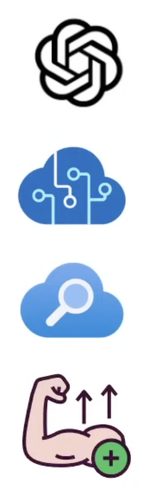

Azure AI-102 Exam Preparation: Technical Overview
Sharing Session for Technical Team, 30–45 minutes
What is the Azure Al Engineer Associate?
The Microsoft Azure Al Engineer Associate (Al-102) is an Al certification focused on:
- Using Azure's managed Al services
- Working with Large Language Models (LLMs)
Who is this Certification for?
Consider the Al-102 certification if
You want to directly learn how to work with OpenAl's LLMs pragmatically.
You want to have deep knowledge on implementing Azure's Managed AI Offering
You want to have deep knowledge on implementing Azure's Managed AI Offering
You are a Cloud Engineer upskilling to take on AI Engineer responsbilities.

Exam Guide - Content Outline
Exam Guide - Content Outline
- 15-20% Domain 1: Plan and manage an Azure Al solution
- 10-15% Domain 2: Implement content moderation solutions
- 15-20% Domain 3: Implement computer vision solutions
- 30-35% Domain 4: Implement natural language processing solutions
- 10-15% Domain 5: Implement knowledge mining and document intelligence solutions
- 10-15 % Domain 6: Implement generative AI solutions
Exam Guide - Response Types
There are ~40-60 Questions
You can afford to get roughly 12-18 questions wrong
Format of Questions
- Multiple Choice
- Multiple Answer
- Drag and Drop
- Yes and No
- And more...
1. Introduction (3 minutes)
-
What is AI-102?
Exam: Designing and Implementing a Microsoft Azure AI Solution
Focus: Building AI solutions using Azure Cognitive Services, Azure Applied AI Services, and Azure AI infrastructure. -
Why it matters for our team?
- Learn to integrate AI capabilities into existing apps
- Understand best practices for scalable, secure, and responsible AI
- Prepare for real-world projects using Azure AI
2. Core AI Services Overview (12 minutes)
a. Language & Text
- Language Understanding (LUIS / CLU)
- Intents, entities, utterances
- Example: chatbot intent recognition
- Text Analytics (Sentiment, NER, PII, Key Phrases)
- Use case: customer feedback analysis
- Translator
- Text and document translation with data residency control
b. Vision
- Computer Vision
- OCR, image analysis, tagging, description generation
- Custom Vision
- Train custom image classifiers or object detectors
- Face API
- Face detection, recognition, liveness verification
c. Speech
- Speech-to-Text, Text-to-Speech
- Real-time transcription, custom neural voices
- Speech Translation
- Real-time multilingual speech translation
d. Decision & Document AI
- Anomaly Detector
- Time-series anomaly detection
- Form Recognizer / Document Intelligence
- Extract structured data from forms, invoices, receipts
3. Building Conversation AI (8 minutes)
a. QnA Maker & Custom Question Answering
- Create knowledge bases from URLs, files, or manual QnA pairs
- Integrate with bots for FAQ handling
b. Bot Framework
- Bot Framework SDK, Composer, Emulator
- Channels: Teams, Web Chat, Direct Line
- Use LUIS + QnA Maker + Dispatch for multi-turn conversations
4. Advanced Topics (10 minutes)
a. Containers for AI
- Run Cognitive Services on-premises or in private networks
- Use Docker containers for Speech, Language, Vision, etc.
- Benefits: data sovereignty, low latency, air-gapped environments
b. Responsible AI
- Principles: Fairness, Inclusiveness, Transparency, Privacy
- Tools: Content Moderator, PII detection, logging control
c. Azure AI Search
- Index structured and unstructured data
- Enrich with AI skills (OCR, entity extraction, key phrases)
- Secure with private endpoints, RBAC, IP filtering
d. Deployment & Monitoring
- ARM templates, Azure CLI, SDKs (C#, Python)
- Logging, diagnostics, Azure Monitor
- Manage keys, endpoints, and network security
5. Exam Tips & Common Scenarios (5 minutes)
- Scenario-based questions: How would you design…?
- Code completion: Know SDK methods (e.g.,
AddFaceFromStreamAsync,StartRecognizeReceiptsFromUrl) - Security & compliance: Private endpoints, VNet integration, data residency
- Cost optimization: Choose between F0 (free) and S0/S1 tiers based on scale
6. Hands-On Recommendations (2 minutes)
- Microsoft Learn Path: AI-102 Learning Path
- Labs: Use Azure Sandbox for hands-on practice
- Quickstarts: Deploy a bot, analyze an image, translate text
- Sample Code: GitHub Azure-Samples/Cognitive-Services
7. Q&A (5 minutes)
- Open floor for team questions
- Discuss real use cases from current projects
Perfect 👍 Based on your AI-102 material + engineer audience + exam-focused workshop, here’s a 30–45 min structured tech sharing session that works well in real teams and maps directly to exam scoring patterns.
I’ll give you:
- ⏱ Time-boxed agenda (30–45 min)
- 🧠 High-frequency exam themes (what MS loves to test)
- 📊 Slide-by-slide outline with talking points
- ❓ Interactive exam drills (hands-on thinking, no labs needed)
- 📝 Facilitator tips (how to run it smoothly)
1️⃣ Session Overview (Exam-Focused Workshop)
Title
AI-102 for Engineers: How to Think Like the Exam
Audience Backend / Cloud / Platform engineers (assumes Azure basics, not AI experts)
Goal By the end, engineers should be able to:
- Instantly pick the correct Azure AI service
- Recognize trick options
- Answer scenario-based questions under time pressure
2️⃣ Time-Boxed Agenda (30–45 min)
⏱ 30-Minute Version (fast & sharp)
| Time | Topic |
|---|---|
| 0–5 min | Exam mindset & service map |
| 5–12 min | Language & Bots (LUIS, QnA, Text Analytics) |
| 12–18 min | Vision & Documents |
| 18–24 min | Containers, Security, Networking |
| 24–28 min | Cognitive Search & Encryption |
| 28–30 min | Lightning exam drill |
⏱ 45-Minute Version (recommended)
| Time | Topic |
|---|---|
| 0–5 min | Exam strategy |
| 5–15 min | Language, Bots & Speech |
| 15–25 min | Vision & Form Recognizer |
| 25–33 min | Containers, Keys, RBAC |
| 33–40 min | Cognitive Search (Private Link, CMK, throttling) |
| 40–45 min | Exam drills + Q&A |
3️⃣ Slide-by-Slide Workshop Outline (Exam-Focused)
🟦 Slide 1 — Exam Mindset (5 min)
Key Message
AI-102 is NOT ML theory It’s service selection + deployment decisions
Say this explicitly
- 80% scenario-based
- Wrong answers are technically valid but wrong context
- Keywords matter more than code
📌 Exam Trigger Words
| Keyword | Meaning |
|---|---|
| Minimize dev effort | Prebuilt service |
| Offline / on-prem | Container |
| Single key | CognitiveServices (multi-service) |
| Private traffic | Private Endpoint |
🟦 Slide 2 — Azure AI Service Decision Map (5 min)
Golden Rule
If Microsoft already solved it → don’t train
| Requirement | Correct Service |
|---|---|
| Chit-chat intent | LUIS |
| Knowledge base | QnA Maker |
| Sentiment | Text Analytics |
| Language detection | Text Analytics |
| Receipt extraction | Form Recognizer |
| OCR only | Computer Vision |
| Predictive maintenance | Anomaly Detector |
| Correlated sensors | Metrics Advisor |
🚫 Trap Custom Vision / Azure ML when “minimize effort” is stated.
🟦 Slide 3 — Language + Bot Scenarios (10 min)
High-Frequency Exam Combo
“Chit-chat + KB + sentiment + multilingual”
✅ Correct Answer Pattern
LUIS + QnA Maker + Text Analytics
❌ Why Dispatch is often wrong
- Dispatch is for routing between bots
- Exam often does not require routing
💡 Exam Drill
“Which service automatically detects language?” ➡️ Text Analytics, not Translator
🟦 Slide 4 — Speech & Streaming (5 min)
Exam Pattern
“Streaming MP3 speech to text”
✅ Required:
AudioStreamFormat.GetCompressedFormat(MP3)SpeechRecognizer
🚫 Wrong:
SpeechSynthesizer(TTS)KeywordRecognizer
📌 Keyword: streaming, MP3 → CompressedFormat
🟦 Slide 5 — Vision vs Form Recognizer (8 min)
Decision Table (very exam-heavy)
| Scenario | Correct |
|---|---|
| Receipts, invoices | Form Recognizer |
| Structured fields | Form Recognizer |
| OCR only | Computer Vision |
| PPE detection | Face API |
| Captions for blind users | describeImage |
🚫 Trap
“Receipts” ≠ OCR Receipts = prebuilt Form Recognizer
🟦 Slide 6 — Containers & Security (8 min)
Exam Keywords
- On-prem
- Limited connectivity
- No internet
- Secure keys
✅ Correct Order Pattern
- Pull image from MCR
- Push to ACR (RBAC)
- Distribute
docker runscript - Run container
📌 Mandatory container flags
Eula=accept
Billing={ENDPOINT}
ApiKey={KEY}
🚫 Don’t put keys directly in CLI history.
🟦 Slide 7 — Cognitive Search (7 min)
Top 3 Exam Themes
🔐 Private Access
| Solution | Correct? |
|---|---|
| NSG | ❌ |
| Firewall | ❌ |
| Public endpoint + IP rule | ❌ |
| Private Endpoint | ✅ |
🔐 CMK Encryption
Implications
- Index size ↑
- Query time ↑
- Requires Key Vault
⚡ Throttling
| Fix | Correct |
|---|---|
| Add replicas | ✅ |
| Higher tier | ✅ |
| Add indexes | ❌ |
🟦 Slide 8 — Responsible AI (5 min)
Microsoft LOVES this
| Scenario | Principle |
|---|---|
| Notify users | Transparency |
| Avoid bias | Fairness |
| Accessibility | Inclusiveness |
| Money decisions | Human-in-loop |
💡 Exam Tip If AI affects salary / hiring / punishment ➡️ Always add human review
4️⃣ Final Exam Drill (5 min)
🔥 Rapid Fire (Ask audience)
1️⃣ “Receipts, minimize effort” ➡️ Form Recognizer
2️⃣ “Private traffic, no internet” ➡️ Private Endpoint
3️⃣ “Multiple correlated sensors” ➡️ Metrics Advisor
4️⃣ “Blind users, image output” ➡️ describeImage
5️⃣ Facilitator Tips (Very Important)
- Don’t read slides → ask “why not the others?”
- Always highlight why wrong answers are tempting
- Use Microsoft wording (“minimize effort”, “secure”, “single key”)
6️⃣ Want Next?
I can:
- 📝 Add speaker notes to your PPT
- ❓ Create 20 exam-style MCQs for live polling
- 🧩 Convert this into a 90-min deep-dive workshop
- 📄 Produce a 1-page AI-102 cheat sheet
---
Love it—this topic is perfect for a 90-minute deep dive. Below is a battle-tested, engineer-friendly, exam-optimized 90-minute workshop that you can run straight from your existing deck + a few added slides.
I’ll structure this like a trainer’s runbook so you can facilitate, not just present.
🧠 AI-102 — 90-Minute Deep-Dive Exam Workshop (Engineer Edition)
Audience: Engineers / architects Style: Scenario-driven, exam-pattern focused Outcome: Engineers answer AI-102 questions by elimination logic, not memorization
⏱️ Full 90-Minute Agenda
| Time | Module | Mode |
|---|---|---|
| 0–10 | Exam mindset & service map | Instructor |
| 10–25 | Language, Bots & Speech | Guided analysis |
| 25–40 | Vision & Document Intelligence | Scenario breakdown |
| 40–55 | Containers, Security & RBAC | Architecture thinking |
| 55–70 | Cognitive Search deep dive | Whiteboard logic |
| 70–80 | Responsible AI (scoring booster) | Fast drills |
| 80–90 | Full exam simulation | Group challenge |
0–10 min — Exam Mindset (Set the Rules)
🎯 Goal
Get engineers to stop over-engineering.
Key Talking Points
“AI-102 does NOT reward clever solutions. It rewards Microsoft’s intended solution.”
The 5 Exam Laws
- Minimize development effort → Prebuilt
- On-prem / no internet → Container
- Single key / billing → CognitiveServices
- Private traffic → Private Endpoint
- Human impact → Responsible AI
Interactive (2 min)
Ask:
“Who here would pick Azure ML for receipts?”
Then explain why that loses points.
10–25 min — Language, Bots & Speech (High ROI Section)
🔍 Why This Matters
This section appears constantly and has many trap answers.
Part A — Language Stack Decision Tree (10 min)
Draw this live:
User text
├─ Intent? → LUIS
├─ Knowledge base? → QnA Maker
├─ Sentiment / language? → Text Analytics
❌ Translator ≠ language detection ❌ Dispatch ≠ required unless routing bots
Exam Scenario Drill (5 min)
“Build a chatbot that:
- Supports chit-chat
- Uses a KB
- Performs sentiment analysis
- Selects best language automatically”
Ask teams to vote.
✅ Correct
LUIS + QnA Maker + Text Analytics
🚫 Explain why Dispatch is tempting but wrong.
Part B — Speech Streaming (5 min)
Exam keyword: streaming MP3
| Requirement | Correct |
|---|---|
| MP3 | GetCompressedFormat(MP3) |
| STT | SpeechRecognizer |
🚫 KeywordRecognizer 🚫 SpeechSynthesizer
25–40 min — Vision & Document Intelligence
🔥 One Rule to Drill In
“If it’s a form → Form Recognizer. If it’s pixels → Computer Vision.”
High-Frequency Matrix (Show + Explain)
| Scenario | Service |
|---|---|
| Receipts | Form Recognizer |
| Invoices | Form Recognizer |
| PPE / mask | Face |
| OCR only | Computer Vision |
| Captions for blind | describeImage |
Exam Trap Breakdown (10 min)
Question
“Extract vendor and total from receipts. Minimize effort.”
Walk through wrong answers:
- ❌ Custom Vision → training
- ❌ OCR → unstructured
- ❌ Personalizer → irrelevant
✅ Form Recognizer (prebuilt receipts)
40–55 min — Containers, Security & RBAC
🔐 Exam Keywords
- Limited connectivity
- On-prem
- Secure keys
- RBAC
Container Deployment Pattern (Must Memorize)
Correct Order
- Pull from MCR
- Push to ACR
- Use RBAC
- Distribute docker script
- Run container
Mandatory Container Flags (Exam loves this)
Eula=accept
Billing={ENDPOINT}
ApiKey={KEY}
🚫 Missing Billing = container won’t start
Group Exercise (5 min)
“Why is Docker Hub wrong here?”
Expected answer:
- No RBAC
- Public access
- Violates least privilege
55–70 min — Cognitive Search (Hard but Scoring)
Part A — Private Access (7 min)
Goal: No public internet
| Solution | Correct |
|---|---|
| NSG | ❌ |
| Firewall | ❌ |
| IP rule | ❌ |
| Private Endpoint | ✅ |
Explain why NSG doesn’t apply to PaaS.
Part B — CMK Encryption (5 min)
Impacts (Exam expects all 3):
- Index size ↑
- Query time ↑
- Requires Key Vault
🚫 No performance improvement
Part C — Throttling Logic (3 min)
| Fix | Works? |
|---|---|
| Add replicas | ✅ |
| Higher tier | ✅ |
| Add indexes | ❌ |
| CMK | ❌ |
70–80 min — Responsible AI (Free Points)
Rule of Thumb
“If AI affects people → add a human.”
Exam Mapping
| Scenario | Principle |
|---|---|
| Notify users | Transparency |
| Bias monitoring | Fairness |
| Accessibility | Inclusiveness |
| Salary decisions | Human-in-loop |
Fast Drill (5 min)
Ask:
“Which principle is violated if users don’t know data is processed?”
Answer: Transparency
80–90 min — Full Exam Simulation
Group Challenge (10 min)
Split into 3–4 groups. Each group gets one full AI-102 style scenario.
They must:
- Pick service
- Eliminate wrong answers
- Justify using keywords
Sample Prompt
“IoT sensors, correlated signals, RCA, alerts, minimal dev”
Correct: ✅ Azure Metrics Advisor
🧾 What You Should Send After the Workshop
I recommend providing:
- ✅ 1-page service decision cheat sheet
- ✅ Top 30 exam keywords
- ✅ Practice MCQs with explanations
Want Me to Deliver the Next Artifacts?
I can:
- 🧠 Add speaker notes per slide
- ❓ Create live Kahoot / Slido questions
- 📄 Generate a printable AI-102 exam cheat sheet
- 🎯 Build a mock exam (40 questions)